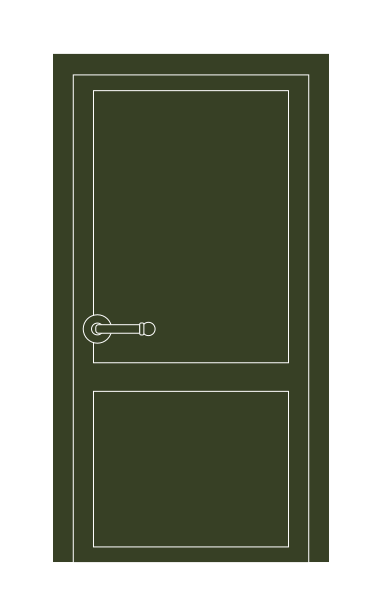
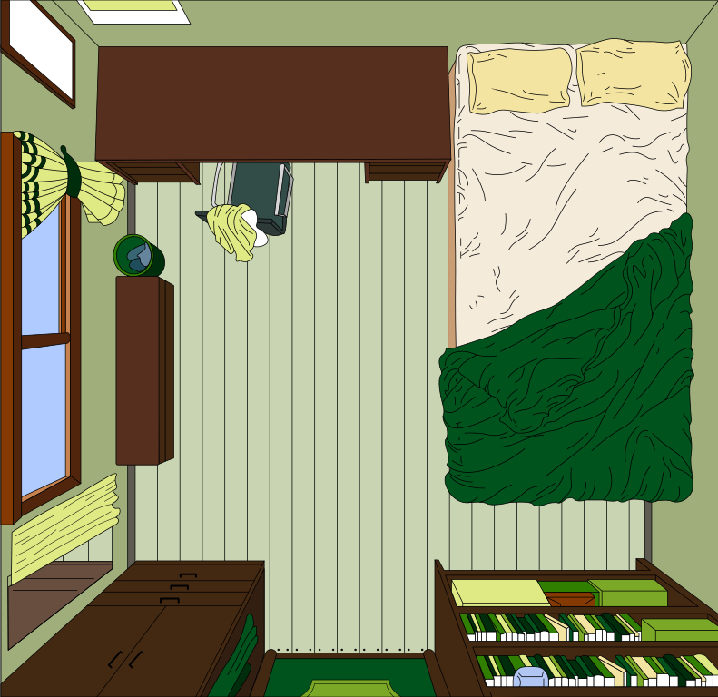
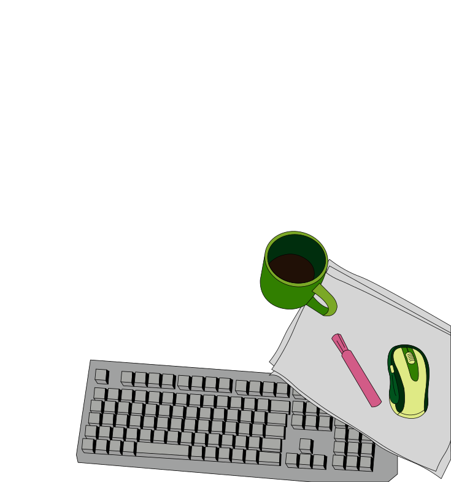
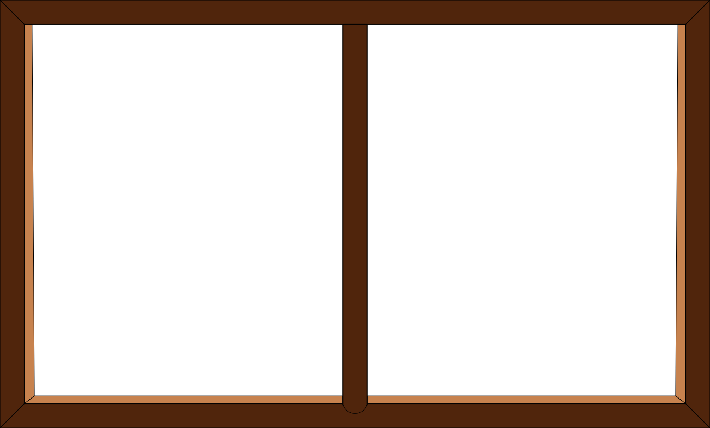

I would venture to guess that Anon, who wrote so many poems without signing them, was often a woman.
익명(Anon)이라는 이름으로 이름 없이 시를 쓰던 이들 가운데 상당수는 사실 여성이었을 것이라고 감히 짐작해 본다.
A woman must have money and a room of her own if she is to write fiction.
여성이 소설을 쓰기 위해서는 돈과, 자기만의 방이 반드시 필요하다.
Life for both sexes … is arduous, difficult, a perpetual struggle. … More than anything, perhaps … it calls for confidence in oneself.
남녀 모두의 삶은 고되고, 어렵고, 끝없는 싸움이다. 그 무엇보다도, 어쩌면 가장 절실하게 요구되는 것은 자기 자신에 대한 신뢰다.
No force in the world can take from me my five hundred pounds. Food, house and clothing are mine forever. Therefore not merely do effort and labour cease, but also hatred and bitterness. I need not hate any man; he cannot hurt me.
세상의 어떤 힘도 내게 해마다 주어지는 500파운드를 빼앗을 수 없다. 먹을 것과 집과 옷은 영원히 내 것이다. 그러므로 수고와 노동만이 아니라, 미움과 원한까지도 사라진다. 나는 어떤 남자를 미워할 필요가 없다. 그는 더 이상 나를 해칠 수 없기 때문이다.
The mind must be wide open; it must have freedom, and it must have peace; no wheel must grate, no light flicker.
마음 전체가 활짝 열려 있어야 합니다. 자유가 있어야 하고, 또 평화가 있어야 하지요. 바퀴가 삐걱거리거나 빛이 깜빡거려서도 안 됩니다.
이 책을 직접 읽어보고 싶다면 아래 버튼을 눌러 온라인 서점으로 이동할 수 있습니다.
교보문고에서 『자기만의 방』 살펴보기
여기에서 쓴 글은 이 브라우저에 저장되고, 아래 아카이브에서 다시 볼 수 있습니다.

웹캠 사용을 허용하면 이곳에 현재 모습이 비칩니다.